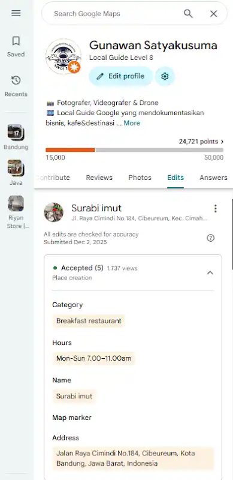

Surabi Imut Cimindi Bandung: Dari Warung ke Entitas Digital
Catatan G-Loop tentang bagaimana aktivitas sebuah warung lokal dapat membentuk referensi digital melalui lokasi, dokumentasi, dan interaksi pengguna.
Di salah satu ruas Jalan Raya Cimindi, Bandung, aktivitas Surabi Imut berlangsung sebagai bagian dari keseharian lingkungan sekitar.
Adonan dibuat, makanan disajikan, pembeli datang, dan percakapan berlangsung. Semua aktivitas tersebut merupakan bagian dari realitas fisik sebuah usaha.
Dalam perspektif G-Loop, aktivitas nyata tersebut dapat menjadi bahan dokumentasi yang kemudian diterjemahkan ke dalam informasi digital.
Aktivitas sebagai Lapisan Pertama
Sebelum menjadi referensi digital, sebuah usaha terlebih dahulu memiliki aktivitas di dunia nyata.
- aktivitas penjualan pada pagi hari
- pembeli datang dan berinteraksi
- produk dibuat dan disajikan
- lokasi menjadi bagian dari aktivitas warga sekitar
Aktivitas tersebut merupakan konteks awal. Dokumentasi kemudian memberikan cara untuk menyimpan dan menghubungkan konteks tersebut dengan informasi lokasi.
Penciptaan Titik Digital
Ketika sebuah usaha memiliki informasi lokasi pada Google Maps, terdapat titik referensi yang dapat digunakan pengguna untuk menemukan dan mengenali tempat tersebut.
- Nama: Surabi Imut ```
- Kategori: Breakfast Restaurant
- Jam aktivitas: sekitar 07.00–11.00
- Lokasi: Cimindi, Bandung ```
Informasi tersebut menunjukkan proses translasi dari aktivitas fisik menjadi informasi yang memiliki struktur dan dapat dirujuk kembali.
Foto sebagai Dokumentasi
Foto memberikan lapisan visual pada informasi lokasi.
Dalam G-Loop, foto tidak diposisikan sebagai jaminan bahwa sebuah informasi pasti benar, melainkan sebagai bagian dari dokumentasi aktivitas dan kondisi yang terlihat pada saat pengambilan gambar.
Dengan demikian, visual menjadi salah satu node yang dapat membantu memberikan konteks terhadap informasi lokasi.
Verifikasi dan Visibilitas
Ketika sebuah lokasi tersedia sebagai referensi pada Google Maps, pengguna dapat menemukan informasi tersebut melalui berbagai aktivitas pencarian dan navigasi.
Status dan keberadaan sebuah profil lokasi tetap bergantung pada sistem serta proses yang berlaku pada platform. Karena itu, G-Loop tidak memposisikan status tersebut sebagai jaminan ranking, kepercayaan, atau visibilitas tertentu.
Yang menjadi perhatian adalah bagaimana sebuah aktivitas nyata memiliki titik referensi yang dapat digunakan dan dikembangkan melalui dokumentasi berikutnya.
Dari Titik ke Ekosistem Informasi
Satu titik lokasi dapat menjadi awal dari munculnya berbagai bentuk interaksi dan dokumentasi.
- review pengguna
- foto tambahan
- informasi lokasi
- pengalaman pengunjung
- referensi navigasi
Dengan bertambahnya informasi tersebut, sebuah tempat dapat memiliki konteks digital yang lebih lengkap daripada sekadar nama dan alamat.
Makna Lebih Luas
Dalam bentuk sederhana:
warung → lokasi → dokumentasi → referensi → interaksi
Visibilitas digital tidak hanya berkaitan dengan perusahaan besar. Usaha lokal juga dapat memiliki jejak digital ketika aktivitas nyatanya didokumentasikan dan dihubungkan dengan informasi lokasi.
Dalam konteks ini, Google Maps dapat berfungsi sebagai salah satu simpul dalam struktur dokumentasi, bukan sebagai satu-satunya sumber keberadaan sebuah usaha.
Lokasi di Google Maps
Berikut adalah tampilan lokasi yang menjadi bagian dari dokumentasi artikel ini:
Hubungan dengan G-Loop Method
Studi Surabi Imut menunjukkan salah satu bentuk sederhana dari pendekatan G-Loop:
Aktivitas nyata → Capture → Konteks → Dokumentasi → Distribusi → Referensi digital
Pada tahap berikutnya, informasi tersebut dapat terus diperbarui melalui aktivitas, dokumentasi visual, pengalaman pengguna, dan sumber digital lain yang relevan.
Baca juga:
Kesimpulan
Surabi Imut Cimindi dapat menjadi contoh sederhana bagaimana aktivitas usaha lokal dapat diterjemahkan menjadi struktur informasi digital.
Prosesnya tidak berhenti pada pembuatan sebuah pin. Lokasi menjadi referensi, dokumentasi memberikan konteks visual, dan interaksi pengguna dapat menambahkan informasi baru dari waktu ke waktu.
Dalam perspektif G-Loop, proses tersebut dapat diringkas sebagai:
Tentang G-Loop Method
G-Loop Method merupakan pendekatan yang dikembangkan oleh Gunawan Satyakusuma untuk menghubungkan aktivitas nyata, dokumentasi, konteks, entity, dan visibilitas digital.
Pendekatan ini menempatkan dokumentasi sebagai bagian dari proses membangun arsip dan keterhubungan informasi, bukan sekadar aktivitas promosi.
Pelajari lebih lanjut:
-
```
- G-Loop Method
- Gunawan Satyakusuma ```